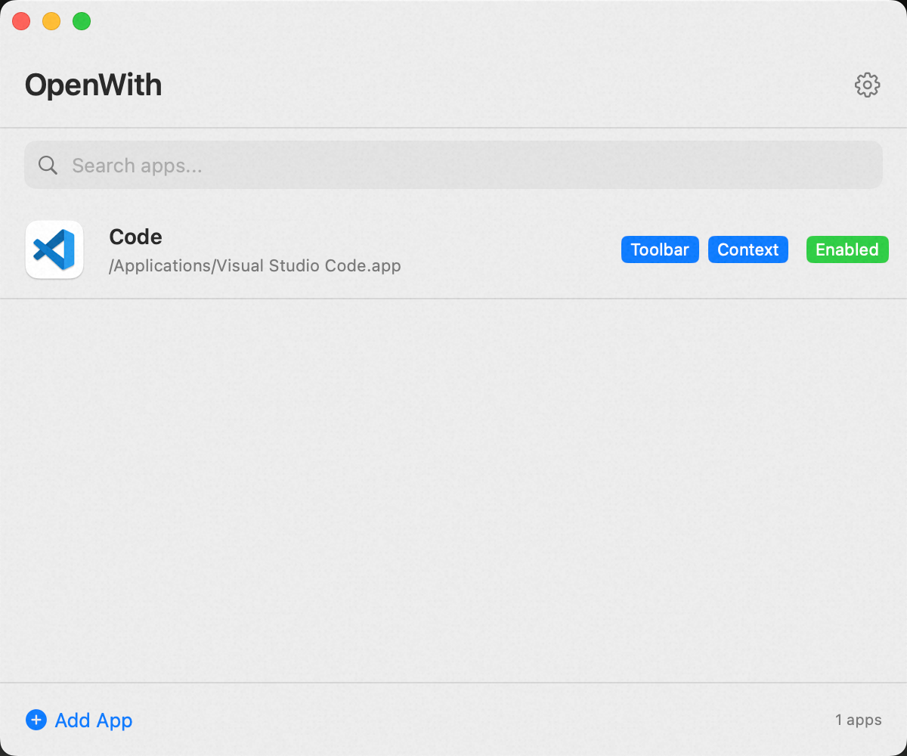
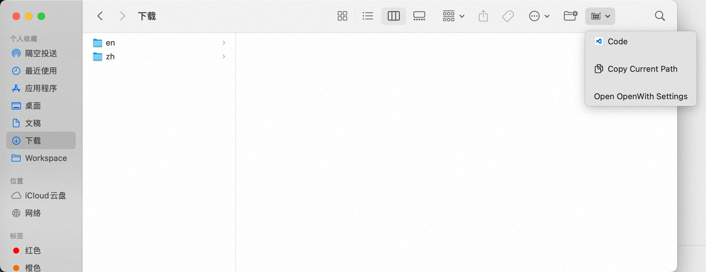
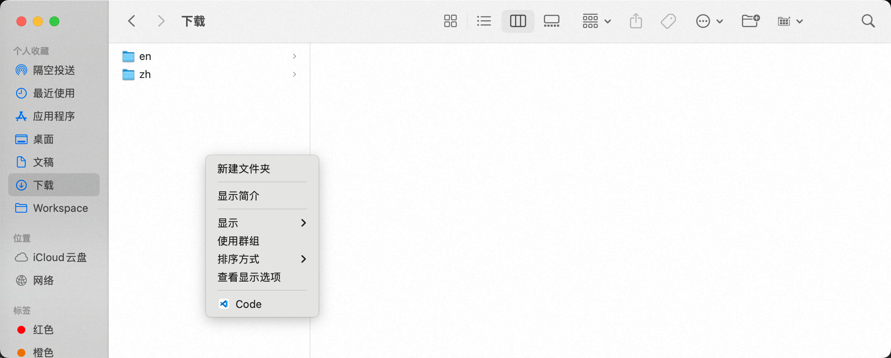
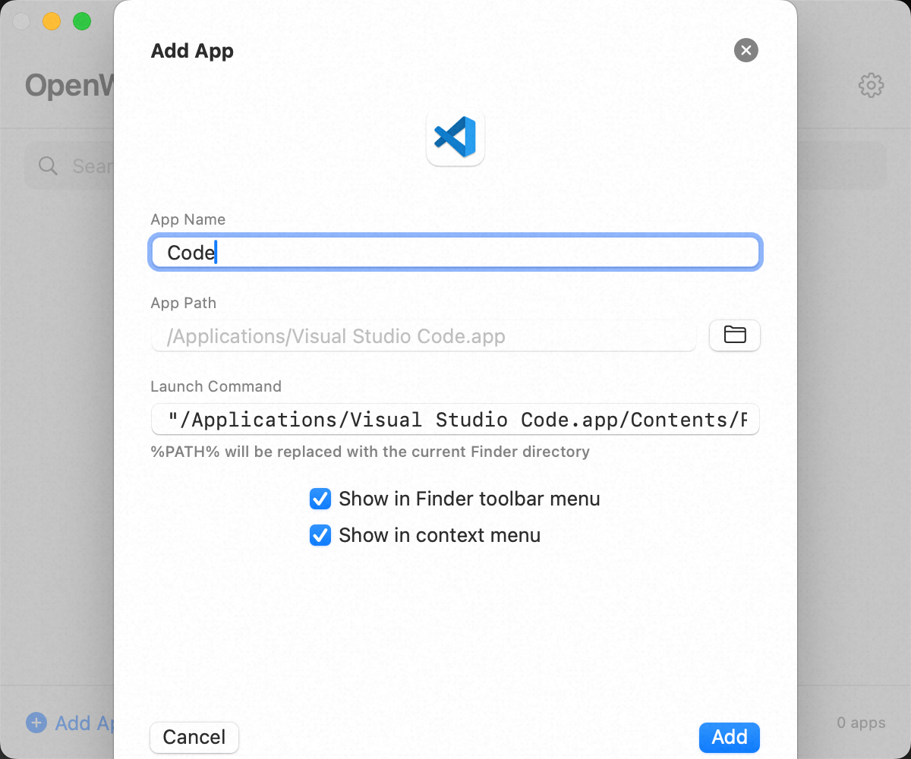
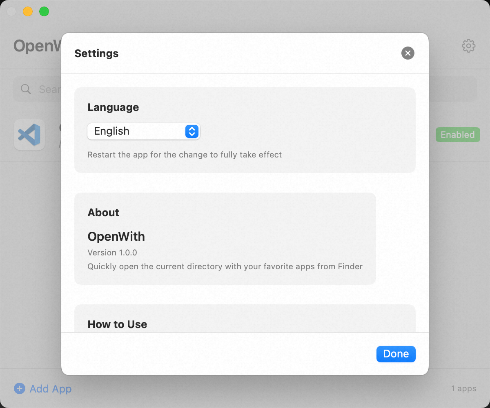
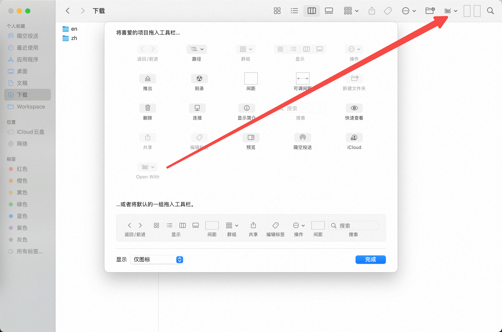

Add a toolbar button or right-click menu to Finder, and instantly open any folder in Terminal, VS Code, iTerm2, or any app you choose.

A dropdown menu right in the Finder toolbar. One click to open the current folder in any app.
Right-click on any folder and find OpenWith in the context menu. Works everywhere in Finder.
Auto-detects popular dev tools and generates optimal launch commands. Supports custom commands with %PATH%.
Quickly copy the current directory path to clipboard from the toolbar menu.
Full localization in 21 languages including English, Chinese, Japanese, Korean, French, German, and more.
No background processes, no network requests, no tracking. Just a simple, fast Finder extension.
Click the OpenWith button in the Finder toolbar to reveal a dropdown menu with all your configured apps.

Right-click any folder to find OpenWith in the context menu. All your configured apps are just a click away.

Easily add new apps by selecting the .app file. Auto-detects name, icon, and generates the best launch command.

Configure language preferences, learn how to enable the extension, and customize your experience.

Open OpenWith and add the apps you want to use (Terminal, VS Code, iTerm2, etc.).
Go to System Settings → Privacy & Security → Extensions → Added Extensions, and enable OpenWith.
In Finder, right-click the toolbar → Customize Toolbar, then drag the OpenWith button to the toolbar.

Click the toolbar button or right-click a folder to open it in your favorite app!